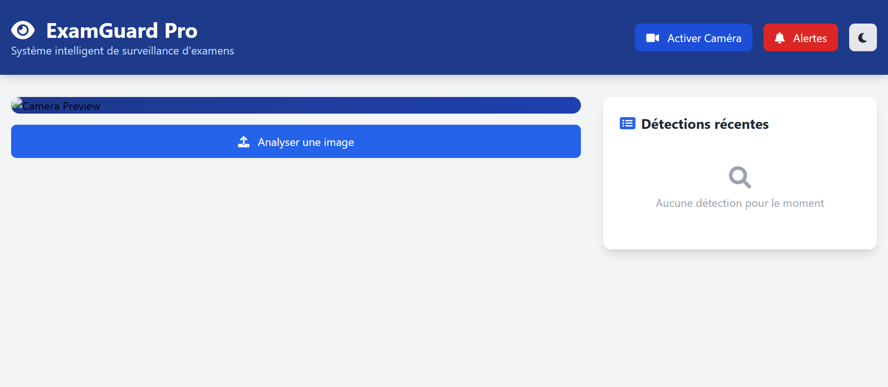

/
Introduction
Afficher la source de la page
Introduction
Bienvenue dans la documentation du projet Cheating Detection.
Ce projet vise à détecter automatiquement les comportements de triche via des techniques de vision par ordinateur. Il utilise des modèles d'intelligence artificielle pour analyser les mouvements suspects pendant les examens en ligne.
Note
Ce projet est open-source et en constante amélioration.
Fonctionnalités principales
Détection en temps réel
Analyse les mouvements suspects en temps réel pendant les examens
IA Avancée
Utilise des modèles de deep learning pour une détection précise
Rapports détaillés
Génère des rapports complets sur les comportements détectés
Interface Web
Interface Flask moderne et intuitive
Démonstration
Vidéo de démonstration du système de détection
Captures d'écran
